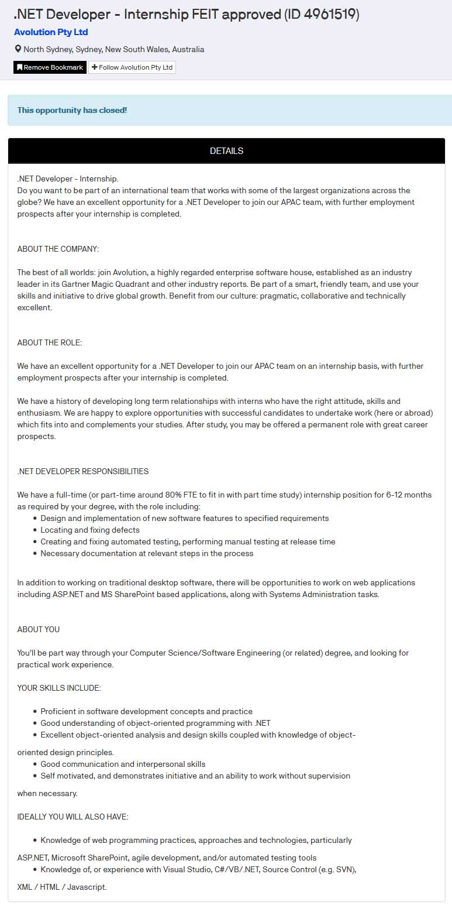
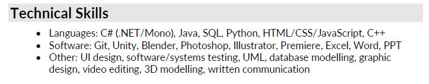
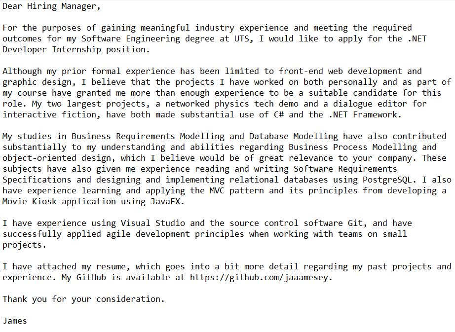
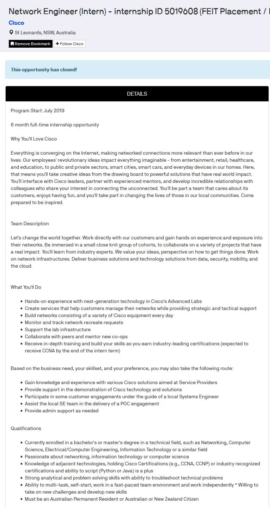

Throughout the semester, I researched many different job opportunities on sites such as Indeed, LinkedIn, and UTS CareerHub. Below is a job opportunity I ended up applying to, and what I considered in my application, as well as another opportunity that I looked into but eventually decided against applying to.

This internship involved programming in C#, which is currently my favourite programming language and a platform I have demonstrable experience with.
I felt that I met all the required skills presented in the opportunity, as well as most of the ideal skills listed, such as knowledge of web programming practices, Visual Studio, and source control.
To reflect these better on my resume, I opted to list C# first in my technical skills section, and prioritised projects I made using C# in the projects section, so that I appeared more relevant for the job.

I also made sure to include evidence of my practical experience in my cover letter. I believe I achieved this by including a link to my GitHub and detailing some of my past projects both in and out of university that would
be relevant to the company.

Unfortunately, this application was apparently only for fourth-year students doing their second internship, which meant I was not eligible for this opportunity - however, I was encouraged to apply in my fourth year
even if no position from the company was advertised.

This internship focused much less on actual programming and instead more on the networking side of software and the troubleshooting of issues associated with it. Although this opportunity looked promising, as it was compatible with my course's requirements and was from a reputable company,
I decided against pursuing an internship here as the networking side of software and IT is not something I am passionate about, and that I believe that I lack sufficient knowledge regarding how networks operate.
Although none of my research has resulted in me obtaining an internship yet, I have learnt a lot about what to look for in a job opportunity, and what places to keep an eye on.